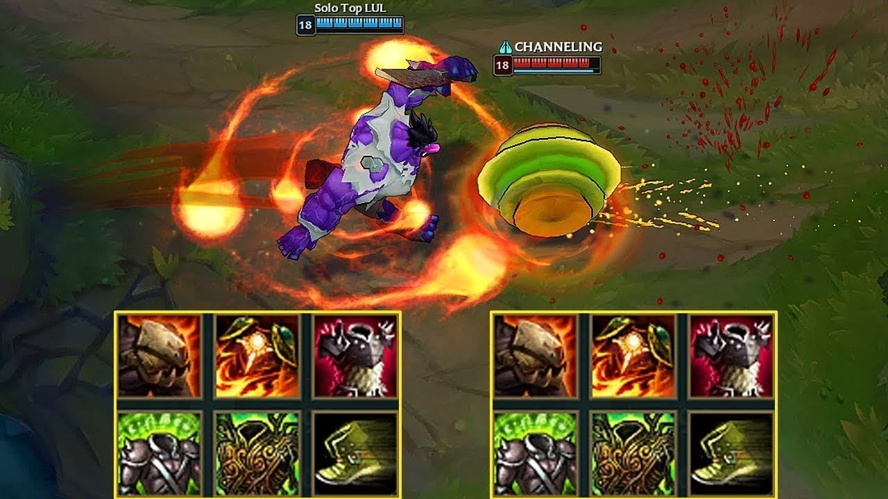
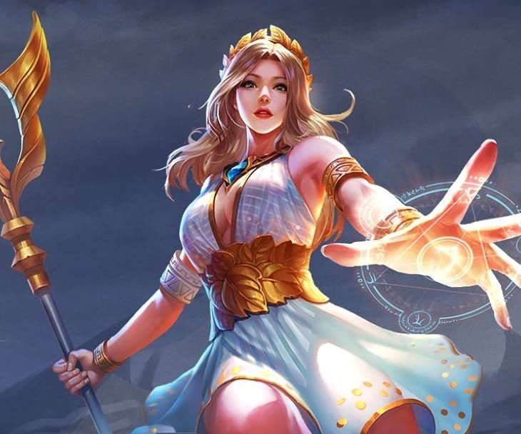
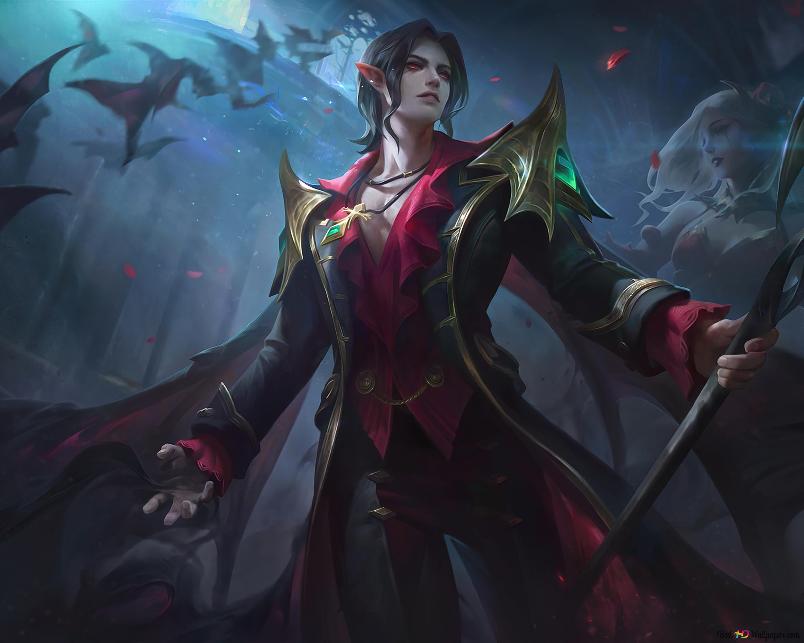
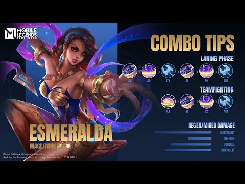
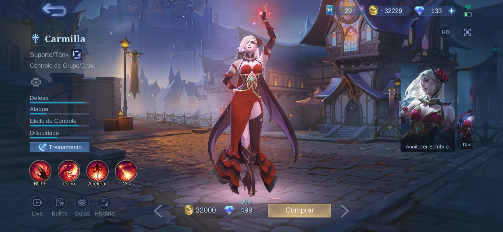

Roles Comunes en los Videojuegos Multijugador
En los videojuegos multijugador, los jugadores asumen diferentes roles que contribuyen al éxito del equipo. Estos roles varían según el tipo de juego, pero algunos de los más comunes incluyen:
-
Tanque:
Se encarga de absorber el daño y proteger a los miembros más vulnerables del equipo. Los tanques tienen alta resistencia y habilidades para atraer la atención de los enemigos.
 -
Sanador:
Responsable de mantener al equipo con vida, curando heridas y proporcionando apoyo durante las batallas. Su enfoque principal es la supervivencia del equipo.
 -
Daño (DPS - Damage Per Second):
Se centra en infligir el mayor daño posible a los enemigos. Su objetivo es eliminar rápidamente a los oponentes para facilitar la victoria del equipo.
 -
Asalto:
Jugadores versátiles que pueden adaptarse a diferentes situaciones en el campo de batalla. Pueden desempeñar roles ofensivos y defensivos según las necesidades del equipo.
 -
Soporte:
Proporciona beneficios adicionales al equipo, como mejoras de habilidades, control de multitudes o debilitamiento de enemigos. Su función es complementar las habilidades del equipo y mejorar su rendimiento general.

Importancia de los Roles en el Trabajo en Equipo
La asignación de roles claros dentro de un equipo es crucial para el éxito en partidas multijugador. Cada rol tiene responsabilidades específicas que, cuando se cumplen adecuadamente, pueden llevar al equipo a la victoria. La comunicación y la coordinación entre los jugadores son esenciales para maximizar la efectividad de cada rol y adaptarse a las dinámicas cambiantes del juego.
Adaptación de Roles según el Juego
Los roles pueden variar significativamente según el género del videojuego. En los juegos de disparos en primera persona (FPS), por ejemplo, los roles incluyen francotiradores, asaltantes o especialistas en demolición. En los juegos de estrategia en tiempo real (RTS), los roles se enfocan en la gestión de recursos, la construcción de bases y la planificación táctica. Adaptarse a las necesidades de cada juego es fundamental para desempeñar eficazmente un rol.